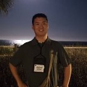

Jaeho Jeon 전재호 · 田宰昊
Ph.D. Student, Department of Electrical Engineering and Computer Science, DGIST
Privacy and Applied Cryptography Lab (PACL) · Advisor: Prof. Young-Sik Kim
Email dgwogh@dgist.ac.kr
Web my-rooftop.github.io
GitHub my-rooftop
Scholar h2pBQrcAAAAJ
ORCID 0009-0007-9074-8491
LinkedIn jaeho-jeon-3a063425b
Location Daegu, South Korea

Research Interests
Side-channel analysisHardware securityPost-quantum cryptography implementationCryptographic engineeringComputer architectureCoding theory
My research focuses on side-channel analysis. My goal is to become a uniquely recognized expert in side-channel analysis, and to gradually expand into computer architecture, quantum computing, networking, and coding theory.
Education
2026.02 – present
Ph.D. student, Electrical Engineering and Computer Science, DGIST
2024.02 – 2026.02
M.S., Electrical Engineering and Computer Science, DGIST
2017.02 – 2024.02
B.S., School of Undergraduate Studies, DGIST
2014.03 – 2017.02
Cheonan Upsung High School, Cheonan
Publications
RB-LDC: Redundancy-Balanced Latent Coding for Robust Diffusion. Hyunseok Jeong, Jaeho Jeon, Young-Sik Kim. The Fortieth Annual Conference on Neural Information Processing Systems (NeurIPS 2026), accepted.
Codeword Masking Can Be Harmful Under Replay Attacks on HQC. Jaeho Jeon, Yongseong Park, Jaeyeon Lee, Suseong Lee, Donghyen Kim, Young-Sik Kim. International Conference on the Theory and Application of Cryptology and Information Security (ASIACRYPT 2026), accepted. Cryptology ePrint Archive 2026/071.
Honors & Awards
2026.09
Grand Prize, 4th KICS HFR Paper Award (제4회 KICS HFR 논문대상), Korean Institute of Communications and Information Sciences. Yongseong Park, Hyunseok Jeong, Jaeho Jeon. Total prize $10,000.
2026.06
GRAVITY 2026 Startup Competition, passed the DGIST preliminary round with a hardware-hacking (side-channel) certification service for cryptographic products. Prize $10,000.
Teaching & Mentoring
2026.06 – 2026.09
Teaching Assistant, Pre-URP, DGIST. Mentored a student team on “Reading the Current to Break Ciphers: Side-Channel Analysis on RSA/AES”.
2025.03 – 2025.12
Teaching Assistant, UGRP (Undergraduate Group Research Program), DGIST. Supported the team that built an optimized PQC implementation on ARM Cortex-M4. The team won two Grand Prizes: PQC Migration Challenge (NIA, 2025.11) and Undergraduate Best Paper Award, 2025 KICS Fall Conference.
Academic & Student Services
2026.07
Staff, DGIST AI & Crypto Summer Camp 2026 — organized the camp, hosted the rump session
2026.04 – 2026.09
President, DGIST Graduate Student Council — representing graduate students of all departments
2026.03 – present
Graduate Student Representative, Dept. of EECS, DGIST
2024.10
Treasurer, 2024 EECS & AI DGIST Student Conference & Happy Hour